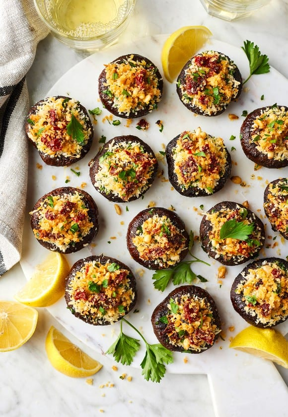

stuffed-mushroom

Description
If you're looking for a crowd-pleasing, impressive, and meatless appetizer to serve at your next event, your search ends with this collection of our very best vegetarian stuffed mushroom recipes. These vegetarian mushroom ideas, which feature decadent and flavorful fillings that everyone will love, are every bit as irresistible as their meaty counterparts.
Ingredients
- 24 oz. weight White Button Mushrooms
- 1/3 lb. Hot Pork Sausage
- 1/2 whole Medium Onion, Finely Diced
- 4 cloves Garlic, Finely Minced
- 1/3 c. Dry White Wine
- 8 oz. weight Cream Cheese
- 1 whole Egg Yolk
- 3/4 c. Parmesan Cheese, Grated
-
Salt And Pepper, to taste
Steps
- Wipe off or wash mushrooms in cold water. Pop out stems, reserving both parts.
- Chop mushroom stems finely and set aside.
- Brown and crumble sausage. Set aside on a plate to cool
- Add onions and garlic to the same skillet; cook for 2 minutes over medium low heat.
- Pour in wine to deglaze pan, allow liquid to evaporate.
- Add in chopped mushroom stems, stir to cook for 2 minutes. Add salt and pepper to taste. Set mixture aside on a plate to cool.
- In a bowl, combine cream cheese and egg yolk. Stir together with Parmesan cheese.
- Add cooled sausage and cooled mushroom stems. Stir mixture together and refrigerate for a short time to firm up.
- Smear mixture into the cavity of each mushroom, creating a sizable mound over the top.
- Bake at 350 degrees for 20 to 25 minutes, or until golden brown.
- Allow to cool at least ten minutes before serving; the stuffed mushrooms taste better when not piping hot.